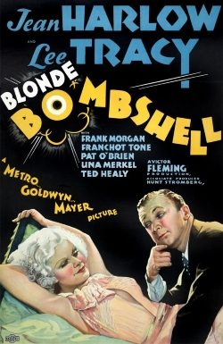

Bombshell

Starring: Jean Harlow, Lee Tracy, Frank Morgan
Director: Victor Fleming
Writer: Norman Krasna, John Lee Mahin, Jules Furthman
Producer: Hunt Stromberg, Irving Thalberg
Bombshell (sometimes advertised as Blonde Bombshell) is a 1933 American pre-Code romantic screwball comedy film directed by Victor Fleming and starring Jean Harlow, Lee Tracy, Frank Morgan, C. Aubrey Smith, Mary Forbes and Franchot Tone. It is based on the unproduced play of the same name by Caroline Francke and Mack Crane, and was adapted for the screen by John Lee Mahin and Jules Furthman.
Trivia
- Based on Bombshell (1933 play by Caroline Francke and Mack Crane).
- Mahin said the project originally began as a serious melodrama about a girl who worked all her life and committed suicide.
- I had to pick too many splinters out of myself the last time," referring to the 1932 film Red Dust, in which her character takes a bath in a rain barrel.
- Early in the film, Lola Burns is told she has to shoot re-takes of Red Dust — the title of an actual Harlow/Clark Gable vehicle from the year before.
Filming Locations
- According to the Worldwide Guide to Movie Locations, scenes in Bombshell were shot at MGM studios in Culver City.
- The nightclub scene was filmed at the Cocoanut Grove club, at the Ambassador Hotel in mid-town Los Angeles.
Previous Showings
3 Runs • 0 Festivals
Original Billings: 1 run (November 1, 1933)
Original Run: November 1, 1933 (Wednesday - Saturday)
All runs on record (3):
- November 1, 1933 (Wednesday - Saturday)Jean Harlow, Lee Tracy
- January 12 - 13, 1990w/ Hell's Angels
- April 9 - 12, 1994w/ Twentieth Century